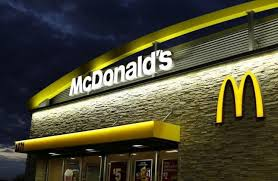
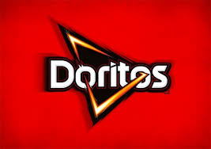
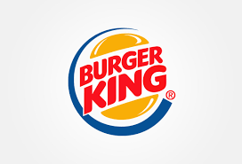

| Nombre: MsDonal's |
|  McDonald's es una franquicia de restaurantes de comida rápida estadounidense con sede en Chicago, Illinois.1 Sus principales productos son las hamburguesas, las patatas fritas, los menús para el desayuno y los refrescos. También se encuentra una oferta disponible de batidos, helados, postres y ensaladas de fruta o de verdura (así como otros productos exclusivos dependiendo del país).2 Atiende aproximadamente a 68 millones de clientes por día,3 en más de 36.000 establecimientos de 118 territorios y países alrededor del mundo. La cadena empleó en 2014 a 1,7 millones de personas.4 Por otra parte, en la mayoría de los restaurantes, se han incluido distintas zonas de juegos para niños.5. |
| Nombre: Doritos |
|  Doritos (síncopa de la palabra «doraditos», haciendo referencia a que estos van dorados o fritos y con un sabor característico a queso)1 es una marca de tortilla chip con sabor producidos desde 1964 por la empresa de alimentos estadounidense Frito-Lay (una subsidiaria de propiedad total de PepsiCo).23 El aperitivo es el tradicional totopo mexicano condimentado, está hecho de tortilla de maíz frita, su forma triangular proviene de la original derivada de rebanar las tortillas. |
| Nombre:Burguer King |
|  Burger King, también conocida como BK,1 es una cadena de establecimientos de comida rápida estadounidense con sede central en Miami, Florida, fundada por James McLamore y David Edgerton, la cual se encuentra presente a nivel internacional y principalmente se especializa en la elaboración de hamburguesas. |